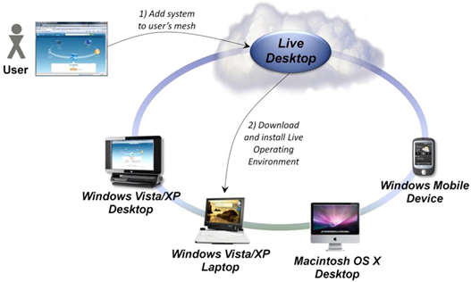
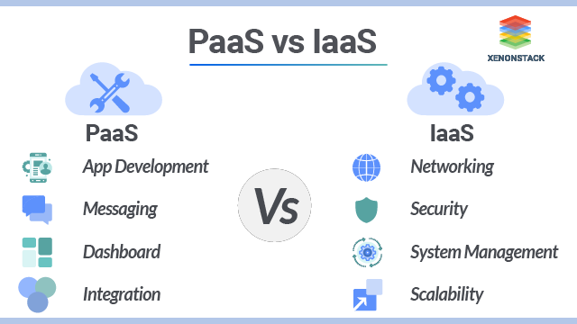
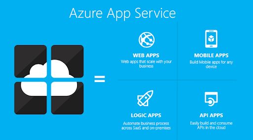
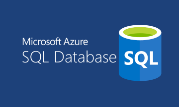
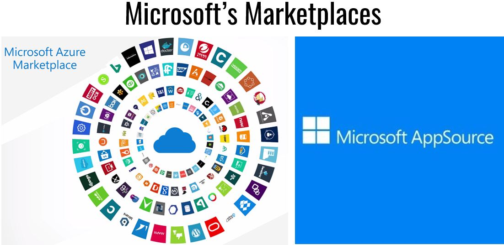
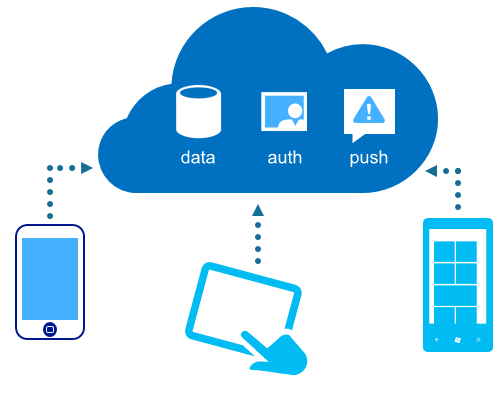
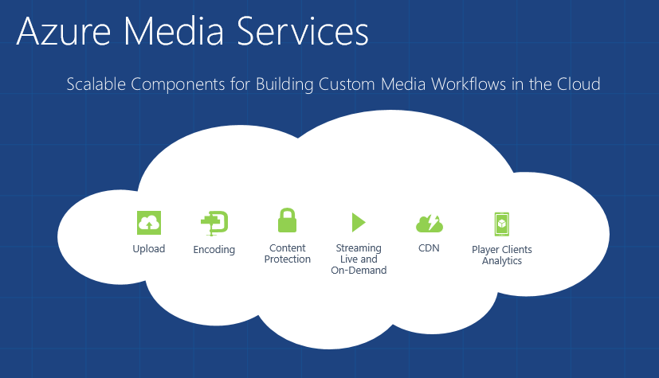

Definition! 2008_2014_2020
Il s'agit d'une offre d'hébergement (applications et données) et de services (workflow, stockage et synchronisation des données, bus de messages, contacts…)
Comment cela se passe?
-

un ensemble d'API (Application Programming Interface)
Ensemble de fonctions qui permettent à un logiciel d'offrir des services à un autre logiciel (Url, https://portal.azure.com, Azure (Remote) PowerShell)
-

Un environnement d'exécution (le « Live Operating Environment »)
une intégration avec les principaux systèmes d'exploitation
-

Type de cloud computing: PaaS et IaaS
Références Utilisées
Les composants de la plate-forme Windows Azure (2014)
-

Microsoft Azure
- WebApps (PaaS : Windows Azure SQL Database MySQL)
- les rôles applicatifs (PaaS: Web Role, Worker Role, VM Role)
- Les machines virtuelles (IaaS: Windows Server, Linux)
- le réseau virtuel (configurer les plages d'adresses, VPN)
- Windows Azure storage (blobs, tables, queues, partage de fichiers, lecteurs (drives), stockage SSD_Premium )
-

Windows Azure SQL database
-
Middleware et gestion d'identité
- Service Bus
- Windows Azure Active Directory
- Access Control Services
- Cache
- Windows Azure Service Bus EAI et EDI
-

Microsoft Azure Marketplace
- DataMarket
- Applications
-

Windows Azure Mobile Services
- services Web
- base de données pour une application mobile
-

Windows Azure Media Services
- gestion de médias
-
Hadoop On Azure
- HDFS
- Map/Reduce
- Javascript
- HIVE
- PIG